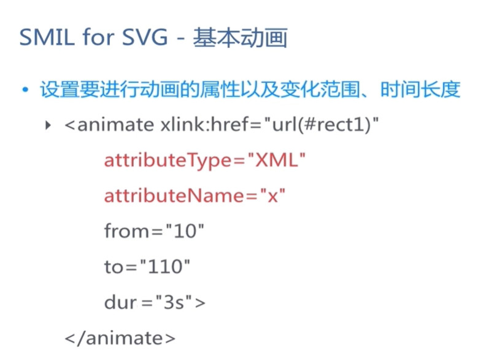

SVG动画 - 基本动画animate
SVG 文档、
SVG
手册、
SVG 教程、
SVG 在线编辑器1、
SVG 在线编辑器2

<animate>动画元素放在形状元素的内部，用来定义一个元素的某个属性如何踩着时点改变。在指定持续时间里，属性从开始值变成结束值。
<animate>相关属性：
- attributeType - 指定目标属性和它相对应的值处于哪个命名空间里，属性值：CSS | XML | auto(默认)
- CSS：指定attributeName的值是一个CSS属性名。
- XML：指定attributeName的值是一个CSS属性名。
- auto(默认)：编译器将把attributeName匹配到目标元素的一个属性。用户代理先搜索CSS属性列表以找出一个匹配的属性名，如果找不到，再为这个元素搜索默认XML命名空间。【出于性能考虑，不推荐用！！】
- attributeName - 需要被改变的属性名
- from - 被修改属性的初始值
- to - 被修改属性的最终值。
- dur - 动画的简单持续时间（动画时长），属性值：时钟值|不定
-
时钟值 指定简单持续时间的时长。值必须大于0。可以用小时（h）、分钟（m）、秒（s）、毫秒（ms）表达这个值。可以组合这些时间表达式以提供一个复合的持续时间，比如这样：或者这样：。hh:mm:ss.iiimm:ss.iii
- 如果一个动画元素不带有属性，简单持续时间就是无限期的。请注意：如果一个简单持续时间是无限期的，则插值不能起作用（虽然它对 <set> 元素依然是有用的）
- begin - 定义动画应何时开始或何时应丢弃元素。(可设置动画延时执行)
- fill - 填充，属性值：freeze 动画执行结束后，停留在最后一帧
- repeatCount - 指定动画重复的次数。它也可以包括用分数值表示。它的值必须大于0，属性值：数值 | indefinite（无限期）